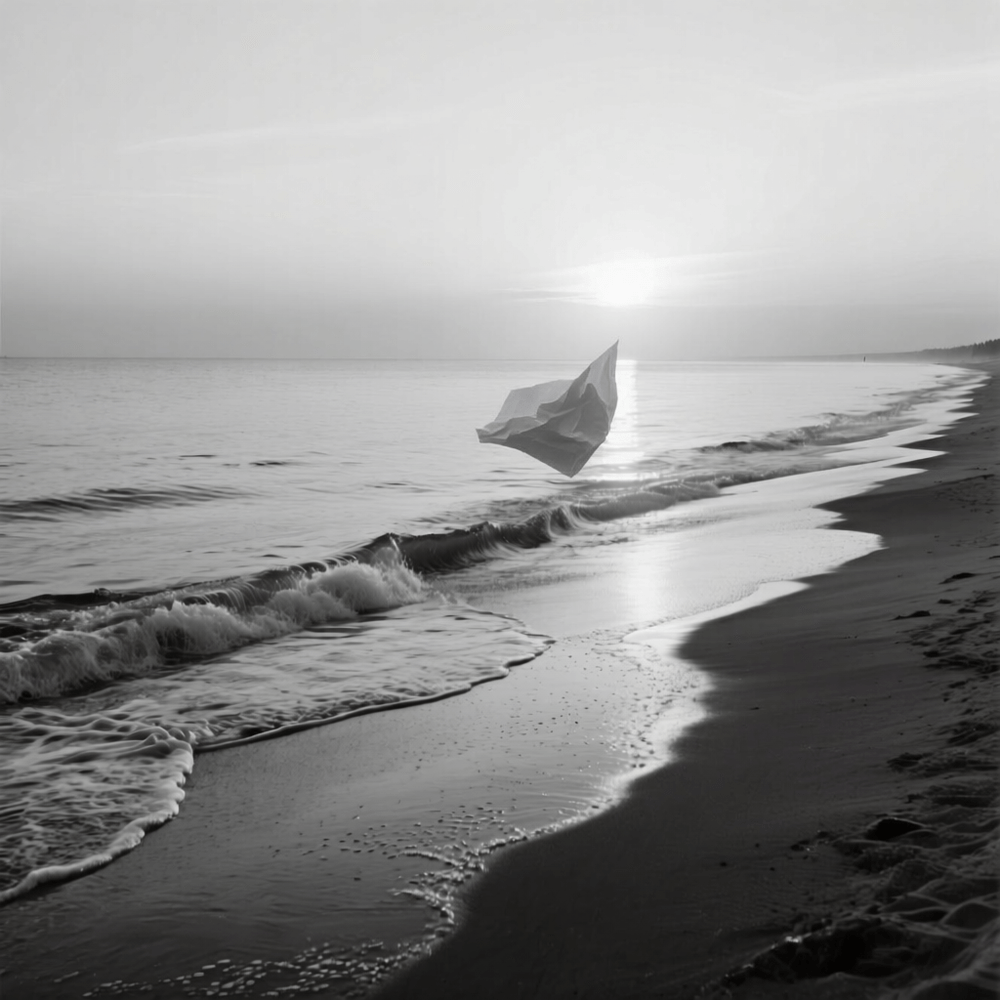
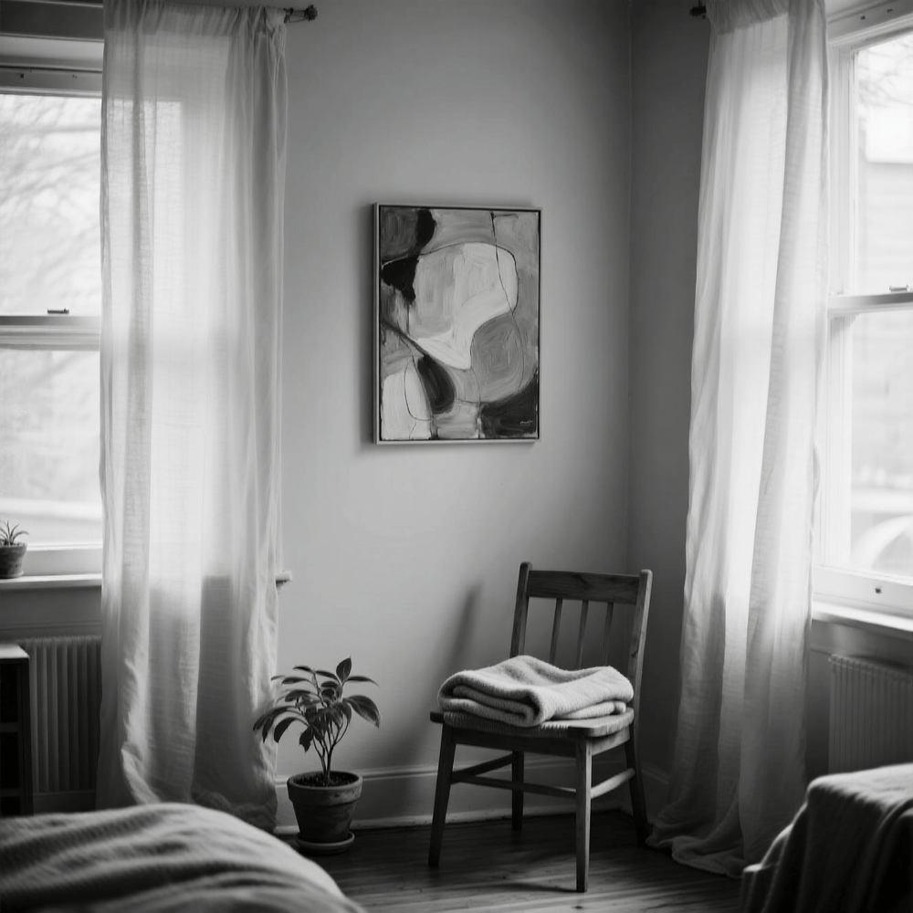

Обо мне
Меня зовут Марина Балик. Марина по-гречески означает «морская». Так назвала меня мама — с надеждой, что я буду свободной, как волна, и неуловимой, как отблеск на воде. Балик (др. тюрк. baliq) - рыба, мой творческий псевдоним, под которым я выбрала говорить с вами.
Я не хочу делиться своими фотографиями или подробностями биографии. Пусть люди видят меня только через мои работы и этот небольшой текст — всё остальное пусть остаётся за кадром.
Я родилась не на берегу океана, а на крошечной железнодорожной станции Марк, затерянной где-то в Подмосковье. Все мое детство серенькие дворики, гаражи и угрюмые улицы заменяли мне побережье, а шум проходящих поездов — прибой.
Скромные папа и мама, ничего особенного, обычная советская семья, с любовью, книгами на полках и вечным ощущением чего-то недоговоренного. Но уже тогда я почувствовала, что хочу рисовать. Краски были моим языком, когда слова казались слишком грубыми или не находили нужного тона.
С детства я была задумчивой девочкой, которая больше любила наблюдать, чем говорить. Я часами сидела у окна, глядя, как плывут облака, как играет свет на стенах, как дымок от труб смешивается с каждый вечер разным закатным небом.
Всю жизнь я мечтаю о море — о его запахе, о солёном ветре, о бесконечности горизонта. Но, странное дело, когда я действительно оказываюсь у воды, мне становится холодно. Даже летом. Даже в самые жаркие дни. Я стою босиком на песке, слышу шелест волн, вдыхаю свежесть… и дрожу. Будто море всё ещё для меня слишком чужое, слишком большое, чтобы принять меня полностью.
В начале девяностых мы переехали в Жуковский — город с высоким уровнем образования, интеллектуальной атмосферой и множеством талантливых людей. Для меня этот переезд стал настоящим откровением. Здесь я впервые познакомилась с людьми, чьи мысли шли в такт моими собственным. Юность прошла среди учёных, инженеров, музыкантов, художников — в этом городе, где каждый второй был «не как все», я почувствовала себя частью чего-то большего. Здесь я поняла, что хочу быть частью мира, который говорит формами, цветами, движениями. Не словами — красками.
После школы поступила в Строгановский университет, где училась классической живописи, композиции, перспективе. Но сердце тянуло к другому — к тому, что нельзя измерить линейкой. Мне хотелось передать эмоцию, ощущение, состояние. Я начала экспериментировать. Мои первые работы были хаотичными, почти случайными — как будто я пыталась найти себя через беспорядок. Потом пришёл интерес к абстракции, к внутреннему пространству, которое можно создать одной лишь кистью и холстом.
Но жизнь распорядилась иначе, после выпуска началась черная полоса. Не было ни денег, ни возможностей, ни галерей, которые бы хотели видеть мои работы. И тогда я сделала паузу. Не просто так — потому что нужно было на что-то жить. Я работала в сфере продаж в крупных и мелких компаниях, стараясь найти что-то более-менее творческое, но творчество в лучшем случае ограничивалось помощью клиенту в выборе цвета обивки для мебели или длины и ширины штор. Больше десяти лет я не брала в руки кисть. Только документы, графики, планы, отчёты. Иногда казалось, что я потеряла ту, кто могла рисовать.
И вот — пандемия. Тишина. Закрытие всего внешнего. И в этой пустоте снова заговорило внутри. Я достала старую палитру, разложила краски, нашла несколько холстов в кладовке. Сначала руки дрожали, как будто забыли, как двигаться. Но потом пришёл первый цвет. Потом второй. И я поняла, что теперь рисую иначе. Медленнее. Спокойнее. Моя новая живопись — это не вспышка, а рассвет. Не шторм, а отлив. Я стала использовать мягкие, природные оттенки: серо-голубые, песочные, травяные, дымчато-розовые. Формы стали более плавными, движения — аккуратными, почти музыкальными. Теперь я не искала ответов, а создавала пространство, в котором можно было бы просто быть.
Однажды я поняла, что мои работы должны жить не в галереях, а в домах. Что абстракция может быть не отстранённым искусством, а частью повседневности. Так родилась идея интерьерной живописи — создавать картины, которые становятся не просто украшением стен, а продолжением души того, кто в этом доме живёт. Я начала пробовать работать с небольшими форматами, подходящими для квартир, небольших офисов, кафе и ресторанов, добавила в палитру теплоту, уют, легкость. Мне захотелось, чтобы каждый человек, войдя в это пространство, мог увидеть там частичку своей внутренней гармонии.
Я верю, что в каждом из нас есть свой внутренний абстрактный мир — тот, который сложно выразить словами, но который можно увидеть в цвете, форме, движении. И этот мир можно вместить в уголок комнаты, в рамку, в один взгляд. Искусство не должно быть чужим. Оно должно быть своим. Близким. Тихим.
Сейчас я живу в скромной квартире-студии под Москвой. У меня нет галерей, нет известности, нет модных коллекционеров. Но есть холсты, кисти, немного красок и огромное желание продолжать. Я всё ещё начинающая художница, которой нужно пройти много дорог, чтобы понять, куда она идёт. Но я верю, что даже самый маленький порыв души может стать волной. Возможно, никто не заметит её, но мне хочется верить, что она сможет изменить к лучшему что-то в небольшом кусочке мира вокруг себя.